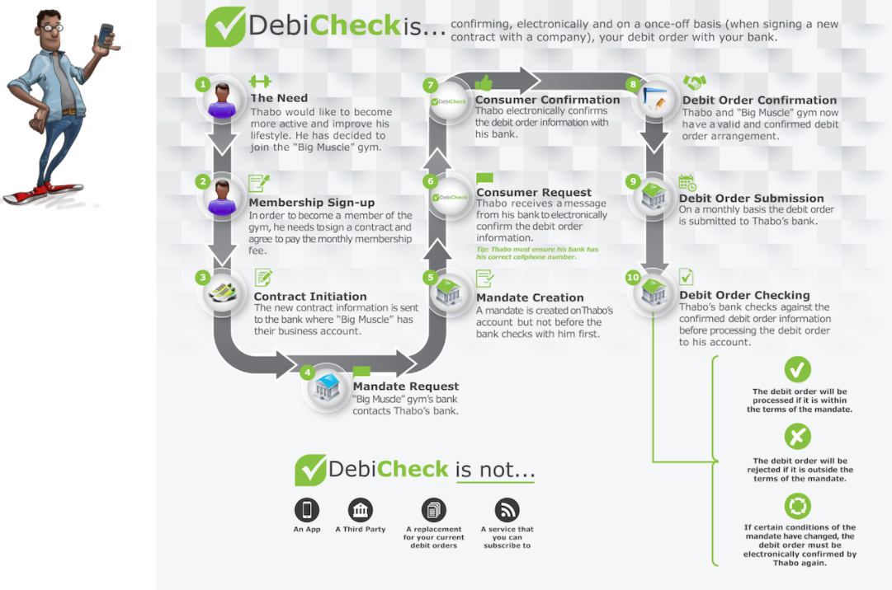
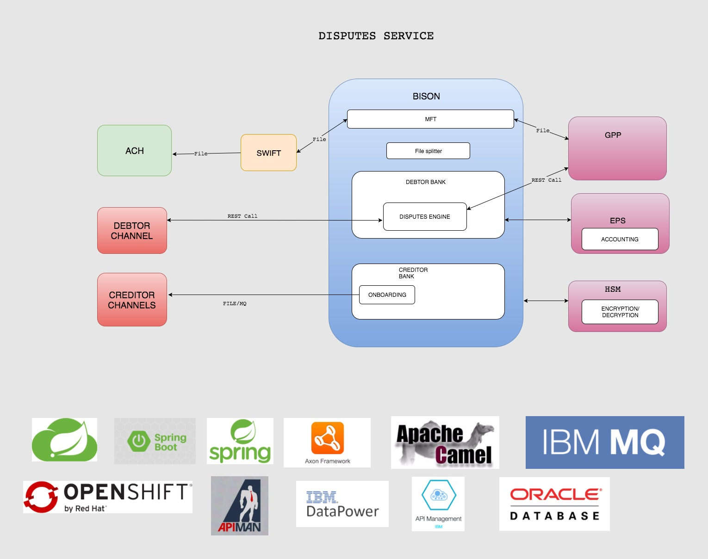

Convenience Of Debit Orders
Most South Africans agree that debit orders are a convenient way to pay their accounts, as it saves them time and having to remember to make payments, thereby giving them peace of mind.
Debit Order Abuse
Has become a major issue in South Africa
Companies
There has been bad behaviour by some companies that process invalid debit orders to consumer bank accounts.
Consumer
In addition, there are consumers that avoid paying valid debit orders by unfairly disputing these with their banks.
DebiChecks are new debit orders electronically confirmed by you with your bank on a once-off basis, relating to a new contract that you have signed with a company.
DebiCheck In Action

-
Difference between DebiCheck debit orders and other debit orders?
DebiCheck debit orders are debit orders that you will confirm, electronically and on a once off basis. Its purpose is for you to confirm the details of the debit order with your bank before it is processed to your account. Other debit orders are not confirmed electronically, Currently, banks do not have record of your debit orders and therefore cannot verify that the debit order information is correct before they process your debit order. -
How often will I need to confirm my DebiCheck debit order
You will only need to confirm your debit order information at the start of the contract. However, if the debit order information that you confirmed changes, your bank will ask you to confirm the new information. -
What do I need to do as a consumer?
For existing debit orders – nothing. For new DebiCheck debit orders, you will need to check and confirm the new debit order information in the manner requested by your bank. This could either be in person (face-to-face), using online banking or your banking app or remotely by call centre or a request sent via your mobile phone
Suspensions
Payer requests the Paying Bank to stop all future AC Debit Payment Instructions related to a specific AC mandate.
Tech, Framework and Plugins
- Easy Rules - Powerful Java rules engine
- Java Specifications - Dynamic queries
- Camel - Message-oriented middleware with a rule-based routing
- XSLT - Validation
- Jacoco - Test coverage
- Axon framework - that provides implementations of the most important building blocks to apply the CQRS architectural pattern
Functionality
- Rest, Soap, File System, Queues
- Windows - SOT, EOT
- Raise incident - Business, Technical
- Front end - Angular 2

That is DebiCheck in a nutshell! For more information visit https://debicheck.co.za/
CIB Masspay
Payments and RMS
Tells our Story
What is BISON?
"We are creating an ecosystem that is not defined by a single application or framework, but rather an integrated suite of best-of-breed tools & frameworks that encompasses the full life-cycle of superb software."
Bison in a nutshell
In two word, "developer productivity". In five words, "continues innovative business focused delivery". We are striving to select a set of very usable frameworks, create their base implementations for quick reuse and increase the collective speed of development. The purpose...to reduce the time it takes to setup and start being productive in projects, creating easily maintainable solutions without vendor lock-in. This is part of realising our broader strategic ambitions.
- OpenShift
- Kubernetes
- Docker
Features
BISON Technologies
-

OpenShift
OpenShift is a container application platform that brings docker and Kubernetes to the enterprise.
-

Kubernetes
Kubernetes is an open-source system for automating deployment, scaling, and management of containerized applications.
-

Docker
Docker is an open platform for developers and sysadmins to build, ship, and run distributed applications, whether on laptops, data center VMs, or the cloud.
Cutting edge moddern applications
Open-sourced initiatives allow us to take advantage of secure, reputable and well defined frameworks.
-
Oppinionated Java development Spring boot
Spring boot
-
SCDF
Spring Cloud Data Flow -
IBM MQ *
Hardaware backed Message Queueng -
For web, mobile web, native mobile and native desktop with Speed and Performance in mind. Angular
Angular
-
Hawt.io
Dashboard plugins for your Java Applications. -
Routing and Mediation Rules Camel
Camel
-
Kibana and Logstash
Centralize, Transform & Stash Your Data -
API developer tools for the OpenAPI Swagger
Swagger
CQRS
CQRS stands for Command Query Responsibility Segregation. It's a pattern that I first heard described by Greg Young. At its heart is the notion that you can use a different model to update information than the model you use to read. information
Domain Driven Design
Domain Driven Design is a methodology and process prescription for the development of complex systems whose focus is mapping activities, tasks, events, and data within a problem domain into the technology artifacts of a solution domain.
What is Payments?
"We orchestrate files between channels, mainframe, industry and accounting."
40+ Microservices
Working in tandem to bring payments stability, scailability and resiliance.
-
01. Incoming File source
Camel is used to source files of up to 50 000 transactions.
-
02. Transform and Store
We transform these messages to fast and moddern formats. Then warehouse these messages for auditing.
-
03. Validate business rules.
Validate using fast reputable rules engines.
-
04. Store and send to next recipiant
We can now store and send on the message to it's respective recipiant.
Payments and RMS
-
Accounting
Processes accounting messages -
Intergration with bank systems
With GPP, ANTS, ACH and EPS. -
File orchestration
We orchestrate files between all these systems.

Receivables Management System
Receiving your money soon....